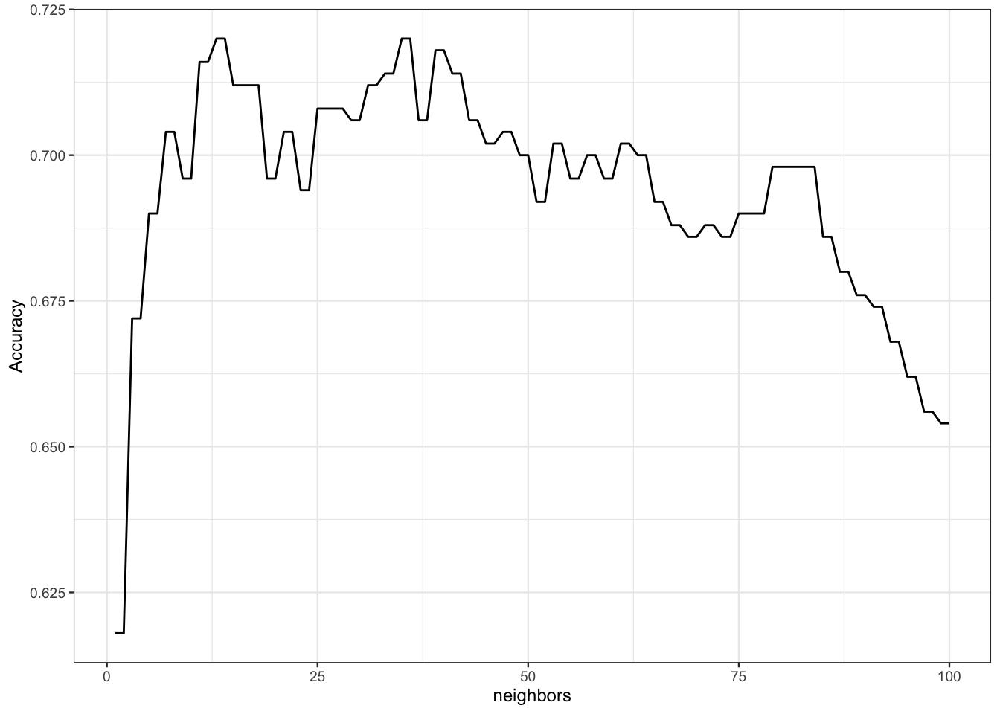
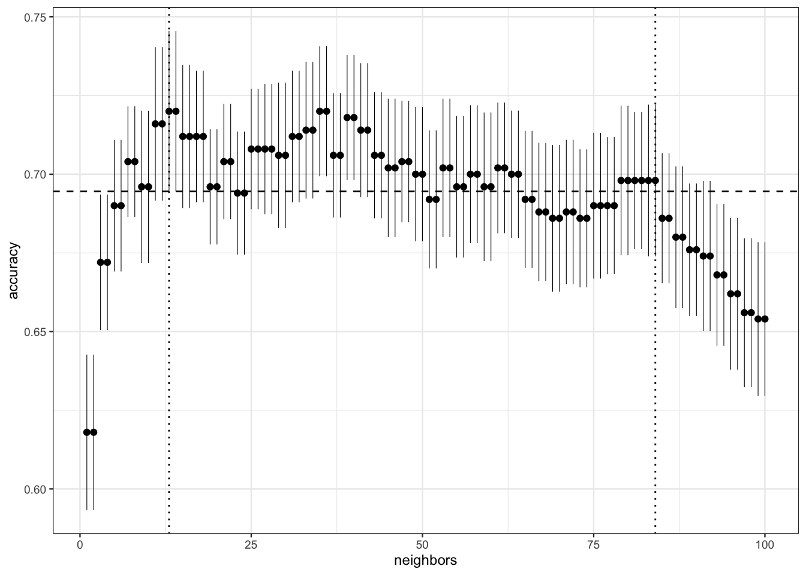

3 Compléments
3.1 Variance de l’erreur de validation croisée
Lorsque les estimateurs du risque sont obtenus en ajustant l’algorithme plusieurs fois (sur différent sous-échantillons), il est possible d’estimer la variance (conditionnelle aux données) de ces estimateurs. Par exemple, dans le cas d’une validation croisée \(K\) blocs pour le risque quadratique en régression, cette variance est approchée par
\[ \frac{1}{K}\frac{1}{K-1}\sum_{k=1}^K (\mathcal R_k-\mathcal R_{\text{CV}})^2 \] où \(\mathcal R_k\) représente l’erreur sur le bloc \(k\) et \(\mathcal R_{\text{CV}}\) est l’erreur de validation croisée. L’estimation de cette variance est très importante puisqu’elle permet d’avoir une idée sur les erreurs obtenues. Elle peut donc aider l’utilisateur à calibrer les algorithmes.
Exercice 3.1 (Variance de l’estimateur du risque) On reprend les données générées avec la fonction des chapitres précédents :
donnees <- gen_class_bin2D(n=500,graine=12345,bayes=0.20)$donneeset on considère les estimateurs du risque obtenus avec la validation croisée suivants :
set.seed(12345)
tune_spec <-
nearest_neighbor(neighbors=tune(),weight_func="rectangular") |>
set_mode("classification") |>
set_engine("kknn")
ppv_wf <- workflow() |>
add_model(tune_spec) |>
add_formula(Y ~ .)
grille_k <- tibble(neighbors=1:100)
re_ech_cv <- vfold_cv(donnees,v=10)
ppv.cv <- ppv_wf |>
tune_grid(
resamples = re_ech_cv,
grid = grille_k,
metrics=metric_set(accuracy))On visualise la courbe de risque avec
tbl <- ppv.cv |> collect_metrics()
ggplot(tbl)+aes(x=neighbors,y=mean)+geom_line()+ylab("Accuracy")
ppv.cv |> collect_metrics()
## # A tibble: 100 × 7
## neighbors .metric .estimator mean n std_err .config
## <int> <chr> <chr> <dbl> <int> <dbl> <chr>
## 1 1 accuracy binary 0.618 10 0.0247 Prepro…
## 2 2 accuracy binary 0.618 10 0.0247 Prepro…
## 3 3 accuracy binary 0.672 10 0.0215 Prepro…
## 4 4 accuracy binary 0.672 10 0.0215 Prepro…
## 5 5 accuracy binary 0.69 10 0.0209 Prepro…
## 6 6 accuracy binary 0.69 10 0.0209 Prepro…
## 7 7 accuracy binary 0.704 10 0.0176 Prepro…
## 8 8 accuracy binary 0.704 10 0.0176 Prepro…
## 9 9 accuracy binary 0.696 10 0.0242 Prepro…
## 10 10 accuracy binary 0.696 10 0.0242 Prepro…
## # ℹ 90 more rowsExpliquer à quoi correspond la colonne
std_errdu tibbletbl.Il s’agit de l’écart-type (estimé) de l’estimateur de l’accuracy pour chaque valeur de \(k\). Cette quantité permet de donner une indication sur la précision de l’estimateur.
Expliquer la sortie de
(k_one_std_err <- ppv.cv |> select_by_one_std_err(desc(neighbors))) ## # A tibble: 1 × 9 ## neighbors .metric .estimator mean n std_err .config ## <int> <chr> <chr> <dbl> <int> <dbl> <chr> ## 1 84 accuracy binary 0.698 10 0.0241 Preproc… ## # ℹ 2 more variables: .best <dbl>, .bound <dbl>Cette fonction renvoie la valeur de \(k\) maximale (de manière à minimiser la complexité de l’algorithme) telle que le risque ne dépasse pas le meilleur risque à un écart-type près.
Visualiser les écart-types estimés sur la courbe de risque ainsi que la valeur de \(k\) optimale et celle de la question précédente. On pourra par exemple tracer le graphe suivant :

On remarque que les variances sont élevées, beaucoup de valeurs de \(k\) se situe au dessus de la valeur optimale moins son écart-type.
3.2 Répéter les méthodes de ré-échantillonnage
Les méthodes d’estimation du risque présentées dans cette partie (hold out, validation croisée) sont basées sur du ré-échantillonnage. Elles peuvent se révéler sensible à la manière de couper l’échantillon. C’est pourquoi il est recommandé de les répéter plusieurs fois et de moyenner les erreurs sur les répétitions. Ces répétitions sont très faciles à mettre en œuvre avec l’approche tidymodels, il suffit de construire les échantillons adéquat. Par exemple,
pour répéter 20 fois une validation hold out, on définit les blocs avec
ho_rep <- mc_cv(donnees,prop=2/3,times = 20)pour la validation croisée, on utilise
cv_rep <- vfold_cv(donnees, v = 10, repeats = 20)
Le reste ne change pas, il faudra utiliser ces objets dans l’option resamples de tune_grid.
Exercice 3.2 (Validation croisée répétée) Refaire l’Exercice 3.1 avec une validation croisée répétée 20 fois. On comparera notamment la variance des estimateurs obtenus.
On calcule les erreurs par validation croisée répétée 20 fois.
On trace les accuracy et on visualise les erreurs d’estimations avec des barres verticales de hauteur 2 écart-types.
On remarque bien que les barres sont moins longues que pour la validation croisée répétée (voir exercice Exercice 3.1), les écart-types sont donc plus petits et les estimations plus précises.
3.3 Calcul parallèle
Les validations croisées (répétées) peuvent se révéler coûteuses en temps de calcul. On utilise souvent des techniques de parallélisation pour améliorer les performances computationnelles. Ces techniques sont relativement facile à mettre en œuvre avec tunegrid, on peut par exemple utiliser la librairie doParallel pour utiliser plusieurs cœurs de la machine. À titre d’illustration, nous comparons ci-dessous les temps de calcul pour faire une validation croisée répétée 20 fois. On commence sans calcul parallèle
grille_k1 <- tibble(neighbors=c(1,11,21,31))
t1 <- system.time(
ppv_wf |> tune_grid(
resamples = cv_rep,
grid = grille_k1))t1
## user system elapsed
## 146.115 5.331 152.338Pour paralléliser on regarde tout d’abord la nombre de cœurs disponibles sur la machine
library(doParallel)
detectCores()
## [1] 4On ouvre les connexions sur chaque cœur
cl <- makePSOCKcluster(4)
registerDoParallel(cl)et on lance la validation croisée, elle sera automatiquement parallélisée
t2 <- system.time(
ppv_wf |> tune_grid(
resamples = cv_rep,
grid = grille_k1))t2
## user system elapsed
## 0.490 0.094 32.988Le temps de calcul a bien été diminué. Enfin on n’oublie pas de refermer les connexions
stopCluster(cl)